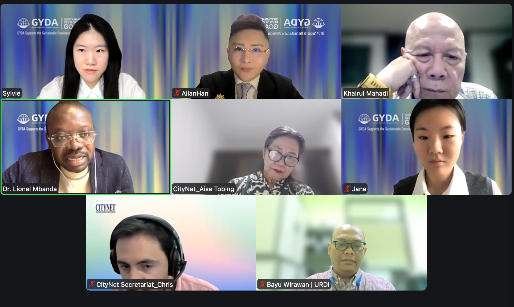
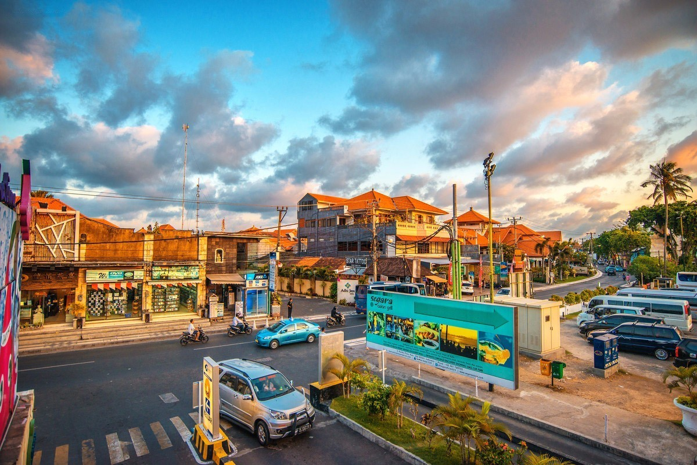
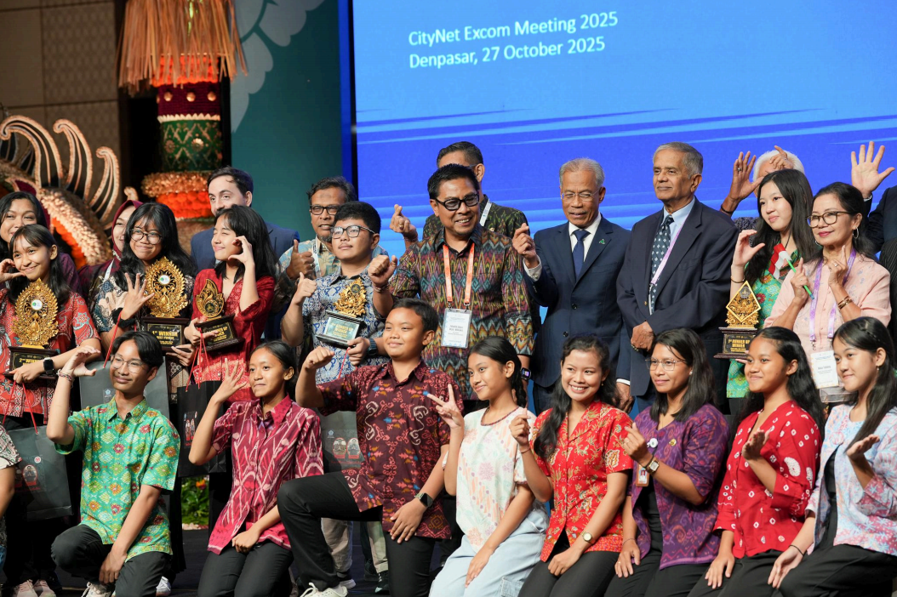
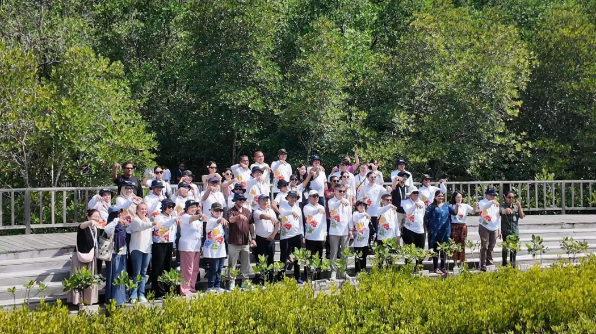

GYDA and CityNet Forge Strategic Partnership to Advance Urban Sustainability and Youth Engagement Across Asia-Pacific

Location
Paris & Bali
Date
April 2026
The Global Youth Development Alliance (GYDA), a Paris-registered nonprofit organization under French Law 1901, is proud to announce the signing of a formal strategic cooperation document with the CityNet Secretariat and the CityNet National Chapter Indonesia to co-host the Bali SDG Essay Competition and the "Tri Hita Karana" Smart City Initiative.
The signing ceremony brought together distinguished representatives from both organizations. From GYDA: Executive Director Allan Han, Advisory Committee Member Dr. NJOKE MBANDA LIONEL ROMEO, and Program Assistant Sylvie. From CityNet: Deputy Secretary General Aisa Tobing (also Jakarta City Planner and Senior Advisor to the Governor of Jakarta), Senior Programme Officer Chris DiGennaro (who leads the Urban SDG Knowledge Platform), and Khairul Mahadi, NCI Focal Point (representing Kuala Lumpur City Hall / DBKL). Together, the two organizations are creating an international platform for Asia-Pacific youth to engage with the sustainable development agenda.
About CityNet

Established in 1987, CityNet is the leading international network connecting cities and local governments across the Asia-Pacific region. With over 100 member cities from more than 20 countries and a Secretariat based in Seoul, South Korea, CityNet drives urban collaboration, knowledge sharing, and capacity building. Its flagship Urban SDG Knowledge Platform provides practical SDG tools and online training to cities throughout the region.
CityNet Secretariat Senior Program Officer Chris DiGennaro leads the development and operation of the Urban SDG Knowledge Platform and online training programs, serving as a key figure in the organization's digital sustainability communication efforts.
Tri Hita Karana: Bali's Ancient Wisdom Meets Modern SDG Action

"Tri Hita Karana" — meaning "three sources of harmony" — is a time-honored Balinese philosophy of balanced relationships between people and nature, people and society, and people and the divine. The Bali SDG Essay Competition uses this concept as its thematic anchor, inviting Asia-Pacific youth to respond to global challenges through the lens of indigenous wisdom.
Outcomes of the Bali SDG Youth Essay and Poster Competition
The competition was a key part of CityNet's 45th Executive Committee Meeting, celebrating the creativity and environmental awareness of Balinese youth:
- Participation and Selection: 60 registered participants, 40 essays submitted, and 15 finalists selected. Their works excellently integrated SDGs with Tri Hita Karana principles.
- Significance: The competition not only recognized exceptional talent but also emphasized the relevance of Balinese local wisdom in addressing global sustainability challenges, inspiring youth as changemakers.
"GYDA's professionalism in youth mobilization and international cooperation is truly impressive. We highly value our partnership with GYDA and look forward to creating meaningful opportunities for Asia-Pacific youth to participate in the sustainable development dialogue."
Why This Partnership Matters

GYDA × CityNet represents a powerful convergence between international civil society and a regional city network — two entities united by a shared commitment to inclusive development. This collaboration will expand youth access to international platforms, broaden their exposure to urban innovation across the Asia-Pacific, and deliver concrete project resources to emerging leaders.